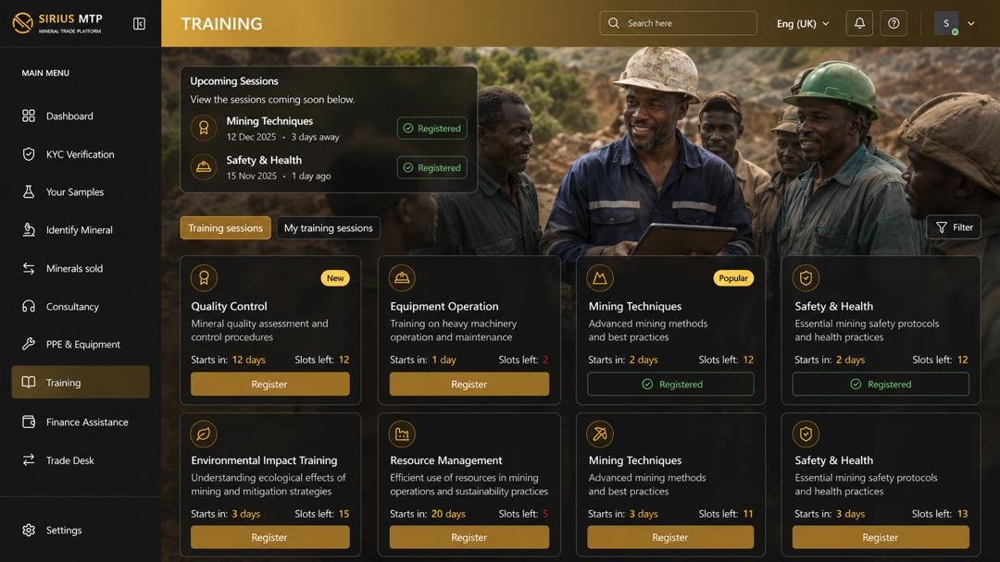

A strategic partnership framework supporting ASM formalization, local content development, supplier growth, mineral trade transparency, investment attraction and mining sector digital transformation.
Sirius MTP is designed as a comprehensive mining ecosystem platform that connects artisanal and small-scale miners, cooperatives, suppliers, buyers, investors, financial institutions, consultants and government stakeholders into one integrated digital environment.
The platform directly supports the Ministry of Mines and Minerals Development's objectives by improving transparency, increasing citizen participation, strengthening local supplier development and facilitating responsible mineral trade. Through digital tools and intelligent services, Sirius MTP helps formalize mining activities while creating sustainable economic opportunities for communities across Zambia.

Many artisanal and small-scale miners face challenges related to market access, financing, supplier identification, licensing support, mineral valuation and buyer verification. Sirius MTP addresses these challenges by providing a centralized platform where miners can access verified opportunities and services.
The platform acts as a bridge between miners and the broader mining ecosystem, creating a trusted environment that supports growth, compliance and long-term sustainability.
Digital onboarding of miners and cooperatives through secure verification processes.
Supporting structured and recognized mining groups.
Helping participants understand and access regulatory requirements.
Connecting miners to verified buyers and trading opportunities.
Introducing miners to banks, DFIs, investors and equipment financing providers.
Supporting beneficiation, traceability and export readiness.
Digital mineral trading, buyer matching and market intelligence.
Mineral valuation, grade estimation and revenue forecasting.
Connecting miners to verified suppliers while supporting local content objectives.
Access to loans, equipment finance, investors and development finance institutions.
Goods, services, equipment and mining opportunities.
Production analytics, commodity insights and sector intelligence.
Through strategic collaboration with the Ministry of Mines and Minerals Development, Sirius MTP can support the implementation of supplier development initiatives, ASM formalization programmes, local content monitoring, critical minerals promotion and digital transformation of mining services.
The platform provides an opportunity to create a national digital infrastructure layer capable of strengthening the connection between government, miners, suppliers, financiers and investors while generating valuable data for evidence-based policy development.